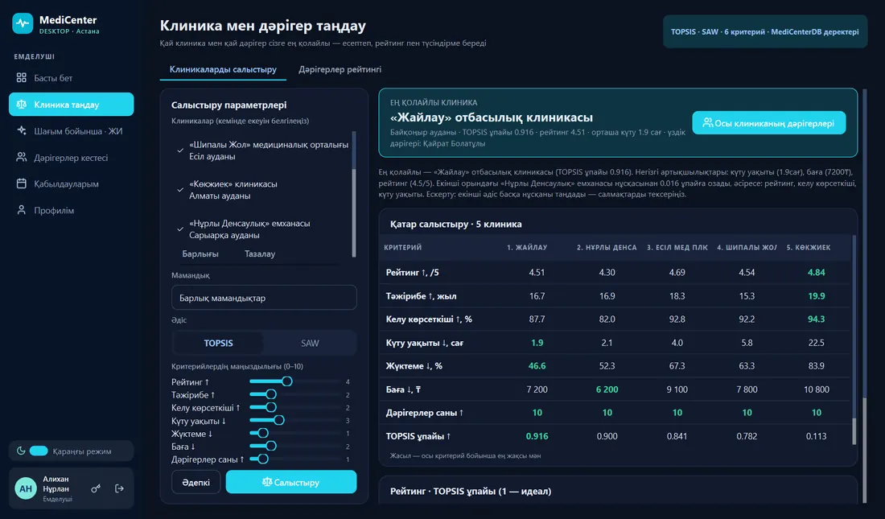
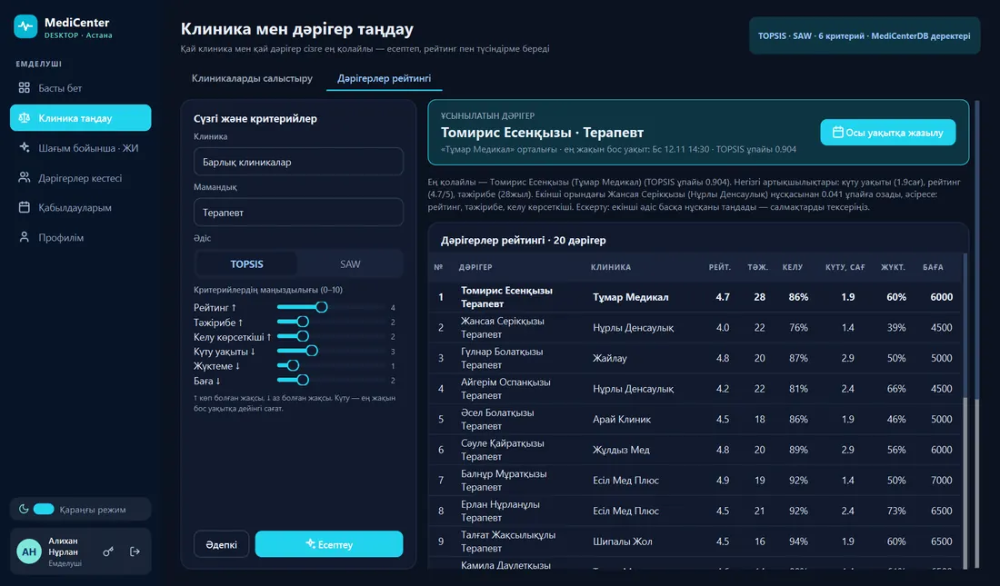
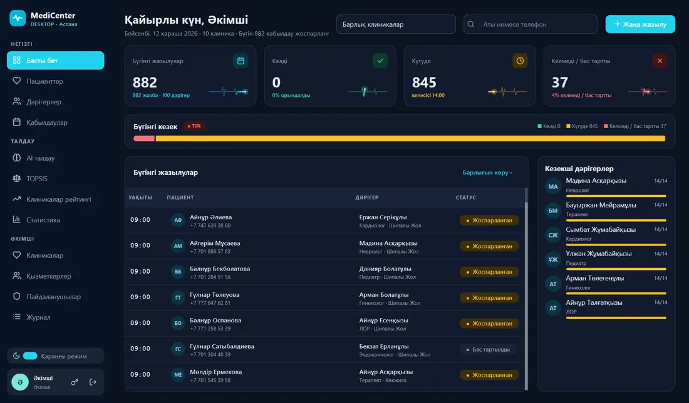

Орнату — 4 қадам
- Жүктеңіз: жоғарыдағы «Windows үшін жүктеу» батырмасын басыңыз.
- Іске қосыңыз:
MediCenterDesktop_Setup.exeфайлын ашыңыз. Windows «Компьютеріңіз қорғалған» деп ескертсе — «Толығырақ» → «Бәрібір іске қосу» басыңыз (бағдарлама цифрлық қолтаңбасыз оқу жобасы). - Орнатыңыз: «Келесі» → «Орнату». Әкімші құқығы қажет емес; жұмыс үстелі мен «Бастау» мәзірінде таңбаша пайда болады.
- Кіріңіз: емделуші «Емделуші ретінде тіркелу» арқылы өзі тіркеледі. Дәрігер мен мейірбике логинін клиника әкімшісі береді.
Телефонда және кез келген браузерде
MediCenter-дің веб-нұсқасы iPhone, Android, Mac және Windows-та жүктеусіз ашылады: sarsenbayeljan-bit.github.io/medicenter-web. Деректер бұлттағы қорғалған базада сақталады, кірген соң кез келген құрылғыдан жалғастыра аласыз.
Сілтемені Safari-де ашыңыз → «Бөлісу» батырмасы → «Басты экранға қосу» (Add to Home Screen).
Сілтемені Chrome-да ашыңыз → ⋮ мәзірі → «Қолданбаны орнату» немесе «Басты экранға қосу».
Мекенжай жолының оң жағындағы «Орнату» белгішесін басыңыз — MediCenter жеке терезеде ашылады.
Скриншоттар



Мүмкіндіктері
2 немесе одан көп клиниканы рейтинг, күту уақыты, баға, келу көрсеткіші бойынша қатар салыстыру.
Клиника мен мамандық бойынша сүзу, ең жақын бос уақытқа бір батырмамен жазылу.
Шағымыңызды жазыңыз — ЖИ қай маман керегін және келмеу қаупін болжайды.
Құпиясөздер хэш түрінде сақталады, 5 қате әрекеттен кейін аккаунт уақытша бұғатталады.
Жүйелік талаптар
Windows 10 немесе 11, 64-bit
~300 МБ бос орын
Жергілікті база: %LOCALAPPDATA%\MediCenterDesktop — бағдарламаны жойғанда сақталады